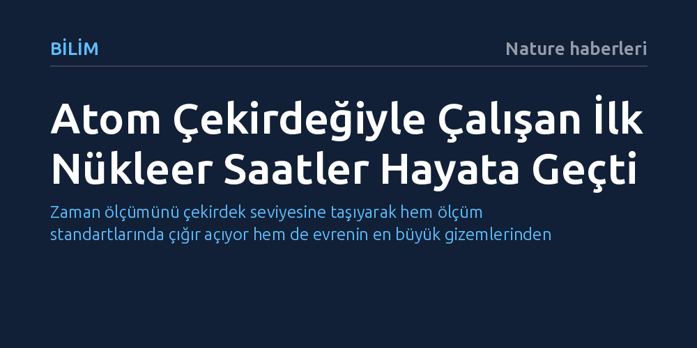

BILIM · Nature haberleri · 2026-10-08
Araştırmacılar, atom çekirdeğindeki enerji geçişlerini kullanarak çalışan ilk nükleer saat prototiplerini başarıyla geliştirdi. Atomik saatlerden çok daha hassas olan bu sistemler, karanlık maddenin doğasını aydınlatmak için de kritik bir umut vadediyor.
Zaman ölçümünü çekirdek seviyesine taşıyarak hem ölçüm standartlarında çığır açıyor hem de evrenin en büyük gizemlerinden karanlık maddeyi tespit etme imkânı sunuyor.

On yıllardır insanlığın en hassas zamanölçerleri atomik saatlerdi. Bu sistemlerin temel çalışma prensibi, atom veya iyonların yörüngesindeki elektronların belirli enerji seviyeleri arasındaki sıçramalarını saymaya dayanıyordu. Ancak kuantum fiziği ve modern metroloji uygulamaları, çok daha yüksek kararlılık ve hassasiyet sunan yeni nesil araçlara ihtiyaç duyuyor.
Nature dergisinde yayımlanan bağımsız çalışmalar, atomun dışındaki elektronlar yerine doğrudan atom çekirdeğindeki enerji geçişlerini temel alan ilk nükleer saatleri başarıyla hayata geçirdi. Bu gelişme, ölçüm bilimi açısından tarihi bir dönüm noktası kabul ediliyor ve zamanın artık çekirdek düzeyindeki salınımlarla kaydedilebileceğini gösteriyor.
Geleneksel atom saatlerinde elektronlar dış elektromanyetik alanlardan ve çevresel gürültülerden kolayca etkilenebilirken, atom çekirdeği dış etkilere karşı çok daha korunaklı bir yapı sunar. Çekirdek içindeki parçacıkların enerji geçişleri çok daha dar ve kararlı frekanslarda gerçekleştiği için, nükleer saatler teorik olarak atomik saatlerin ulaşamadığı ölçüm kesinliklerine erişebilir.
Araştırmacılar, çekirdeğin bu yalıtılmış ve kararlı yapısını kontrol edilebilir lazer sistemleriyle tetiklemeyi başararak deneysel bir zamanölçere dönüştürdü. Böylece atom çekirdeğinin doğal rezonansı, evrenin en kararlı ve dış etkenlere karşı en dirençli zaman standardı hâline gelmiş oldu.
Nükleer saatlerin sunduğu devasa hassasiyet, yalnızca daha kusursuz bir zaman standardı ya da navigasyon altyapısı kurmakla sınırlı kalmıyor. Yapılan ilk denemeler, bu yeni mekanizmanın evrenin en büyük sırlarından birini çözmek için de benzersiz bir hassasiyet sağladığını ortaya koyuyor.
Evrendeki toplam maddenin büyük kısmını oluşturan ancak doğrudan ışık yaymadığı için bugüne dek gözlemlenemeyen karanlık madde, çekirdek düzeyindeki ultra hassas enerji geçişlerinde minik dalgalanmalara yol açabilir. Nükleer saatler, bu mikro sapmaları yakalayarak karanlık maddenin varlığını dolaylı yoldan kanıtlama potansiyeline sahip en güçlü deneysel adaylardan biri konumunda.